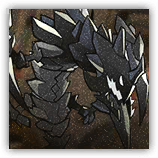

迭代的怪物 Evolving Monster
近战 物理；领袖 构装体
|  |
调停者的护卫和友伴。它在劝谏和服从中将始终选择后者，相信主人的选择才是灾难中唯一的一丝希望。 |
Mon2tr
巨型构装生物，守序中立
AC 19
先攻 +4（14）
HP 287（25d12+125）
速度 40尺，飞行40尺（悬浮）
| 调整 | 豁免 | ||
|---|---|---|---|
| 力量 | 22 | +6 | +6 |
| 智力 | 11 | +0 | +0 |
| 调整 | 豁免 | ||
|---|---|---|---|
| 敏捷 | 18 | +4 | +4 |
| 感知 | 16 | +3 | +3 |
| 调整 | 豁免 | ||
|---|---|---|---|
| 体质 | 21 | +5 | +5 |
| 魅力 | 18 | +4 | +4 |
技能 运动+10，察觉+8
免疫 毒素；中毒，魅惑，恐慌，麻痹，石化，力竭
感官 黑暗视觉120尺，被动察觉18
语言 懂通用语但不能说
CR 17（XP 18,000；PB+6）
特质 Traits
不毁重构 Non-Damaging Restructuring。Mon2tr死亡时，它会爆发出一股力场冲击。敏捷豁免检定：DC20，源自Mon2tr的10尺光环区域内的所有生物。失败：26（4d12）力场伤害，并陷入震慑，持续1分钟，目标可以在结束回合时通过重复的DC20体质豁免来结束此震慑。成功：仅半伤。
自磁 Self-magnetism。当Mon2tr处于凯尔希60尺范围时，其AC获得+5天生护甲加值（已计入AC），可以用魔法将自己的感官传递给凯尔希，且两者可以通过心灵感应进行交流。当凯尔希死亡时，Mon2tr也会死亡。
四爪 Four Claws。Mon2tr可以同时擒抱至多四个中型或更小体型生物。
相位锚定 Phase Anchor。Mon2tr依自己意愿免疫强制位移以及传送效应。
动作 Actions
多重攻击 Multiattack。Mon2tr使用爪击或魔能溅射发动共计四次攻击。
爪击 Claw。近战攻击检定：+12，触及10尺。命中： 26（6d6+5）点穿刺伤害。如果目标为中型或更小体型生物，则被擒抱（逃脱DC20）。
魔能溅射 Eldritch Splast。远程攻击检定：+10，射程120尺。命中：26（4d10+4）点力场伤害。目标周围5尺的生物会受到相同的伤害。
附赠动作 Bonus Actions
协助 Help。Mon2tr执行协助，但受助对象仅限凯尔希。